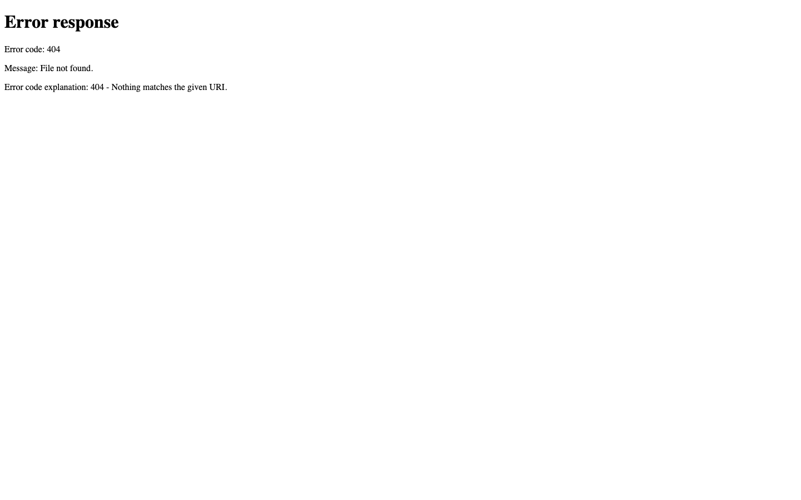
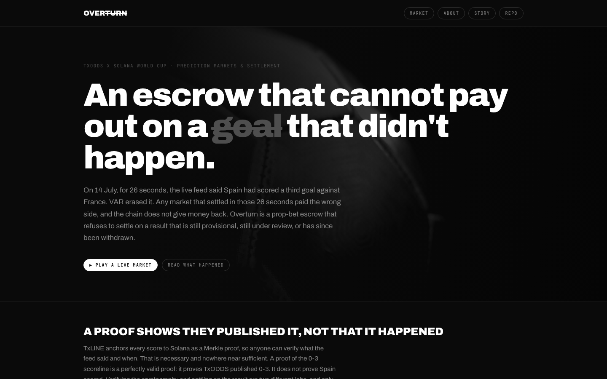
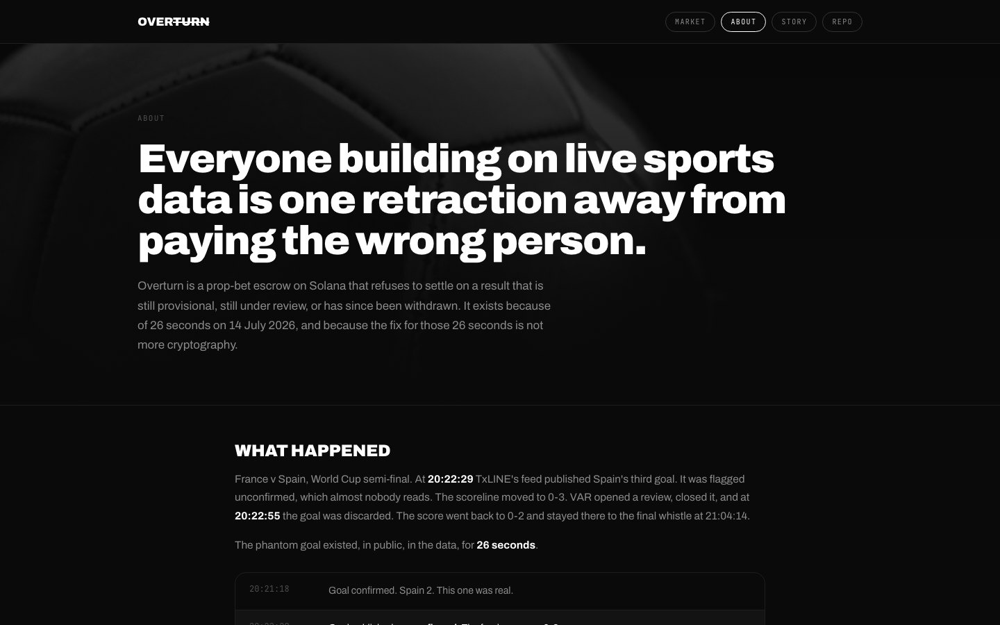

Open the About page and read why Overturn exists
A model visitor tried this on Morkeeth/overturn, served by a plain static host on loopback (no rewrites, no clean URLs). Clicked 'WHY THIS EXISTS' and the page answered with error 404. The stopped path came back as a check, the fix was applied as its own commit, and the same goal was tried again.
Repaired: yesCheck on original red: error pageCheck with fix green
Original bd6a868
Stuck
 Clicked “WHY THIS EXISTS”: the page answered 404
Clicked “WHY THIS EXISTS”: the page answered 404I need to understand why Overturn exists
 Went back
Went backI need to go back to the About page

Clicked “ABOUT”: the page answered 404I need to understand what Overturn is about
 Gave up
Gave upfix 404 error
With the fix dd55810
Reached the goal

Clicked “ABOUT”I need to understand why Overturn exists

Read it here, and a second check of the screen agreedOverturn is a prop-bet escrow on Solana that refuses to settle on a result that is still provisional, still under review, or has since been withdrawn. It exists because of 26 seconds on 14 July 2026, and because the fix
The returned check · download
Replays the visitor's recorded clicks and fails on an error page. It is navigation smoke: a pass alone does not show the goal was completed; the second visit above is what shows that.
"""Generated by Agentic Swarm Simulator from run repair-loop-bd6a868.
Visitor: First-time visitor. Goal: Open the About page and read why Overturn exists.
Outcome: stuck. Clicked 'WHY THIS EXISTS' and the page answered with error 404.
Last words: "fix 404 error"
Navigation smoke check only. A pass does not establish task completion.
Red while a page on this path answers with an error; no error is presumed.
Run: pip install pytest playwright && playwright install chromium && pytest this_file.py
"""
import os, re
from playwright.sync_api import sync_playwright, expect
START = os.environ.get("SWARM_START_URL", "http://127.0.0.1:57408/")
PATH = ["WHY THIS EXISTS"]
SELECTORS = [None]
def test_visitor_path_why_this_exists():
with sync_playwright() as pw:
browser = pw.chromium.launch(headless=True)
page = browser.new_page(viewport={"width": 1440, "height": 900})
status = {}
page.on("response", lambda r: status.__setitem__("last", r.status) if r.request.is_navigation_request() and r.frame == page.main_frame else None)
first = page.goto(START, wait_until="domcontentloaded")
assert first is not None and first.status < 400, f"start page answered {first.status if first else None}"
for index, label in enumerate(PATH):
status.pop("last", None)
# Whole label, any case: the visitor read rendered text, which CSS text-transform can change from the accessible name.
name = re.compile("^" + re.escape(label) + "$", re.I)
target = page.get_by_role("link", name=name).or_(page.get_by_role("button", name=name)).or_(page.get_by_role("tab", name=name)).or_(page.locator("summary").filter(has_text=name))
if SELECTORS[index]:
target = page.locator(SELECTORS[index]).and_(page.locator("a[href],button,[role=button],[role=link],[role=tab],summary")).filter(has_text=name)
expect(target).to_have_count(1, timeout=8000)
assert target.count() == 1, f"recorded control missing or ambiguous: {label!r}"
target.click()
page.wait_for_load_state("domcontentloaded")
code = status.get("last", 200)
assert code < 400, f"clicking {label!r} opened a page that answered {code}"
text = page.locator("body").inner_text().strip()
assert len(text) > 40, "the last page on the path has almost no text"
browser.close()
diff --git a/web/about.html b/web/about.html
index a2b3e83..14d0087 100644
--- a/web/about.html
+++ b/web/about.html
@@ -101,9 +101,9 @@
<nav><div class="wrap">
<a class="mark" href="/">Over<s>turn</s></a>
<div class="navlinks">
- <a class="pill" href="/market">Market</a>
- <a class="pill here" href="/about">About</a>
- <a class="pill" href="/story">Story</a>
+ <a class="pill" href="/market.html">Market</a>
+ <a class="pill here" href="/about.html">About</a>
+ <a class="pill" href="/story.html">Story</a>
<a class="pill" href="https://github.com/Morkeeth/overturn">Repo</a>
</div>
</div></nav>
diff --git a/web/index.html b/web/index.html
index 0e5d81a..b9d047c 100644
--- a/web/index.html
+++ b/web/index.html
@@ -98,9 +98,9 @@
<nav><div class="wrap">
<a class="mark" href="/">Over<s>turn</s></a>
<div class="navlinks">
- <a class="pill" href="/market">Market</a>
- <a class="pill" href="/about">About</a>
- <a class="pill" href="/story">Story</a>
+ <a class="pill" href="/market.html">Market</a>
+ <a class="pill" href="/about.html">About</a>
+ <a class="pill" href="/story.html">Story</a>
<a class="pill" href="https://github.com/Morkeeth/overturn">Repo</a>
</div>
</div></nav>
@@ -117,8 +117,8 @@
does not give money back. Overturn is a prop-bet escrow that refuses to settle on a result that is
still provisional, still under review, or has since been withdrawn.</p>
<div class="cta">
- <a class="pill solid" href="/market#demo">▶ Play a live market</a>
- <a class="pill" href="/story">Read what happened</a>
+ <a class="pill solid" href="/market.html#demo">▶ Play a live market</a>
+ <a class="pill" href="/story.html">Read what happened</a>
</div>
</div></header>
@@ -204,7 +204,7 @@
by a program with no admin key and nobody to appeal to.</pre>
</div>
<div class="cta">
- <a class="pill solid" href="/market">Watch it on chain</a>
+ <a class="pill solid" href="/market.html">Watch it on chain</a>
<a class="pill" href="https://github.com/Morkeeth/overturn#or-drive-it-yourself-one-step-at-a-time">Run it yourself</a>
</div>
</div></section>
@@ -245,7 +245,7 @@ npm run market:open -- --fixture 18257739 --stat 1 --threshold 1</pre>
Nobody decided that. The proof did.</pre>
</div>
<div class="cta">
- <a class="pill solid" href="/about">Why this exists</a>
+ <a class="pill solid" href="/about.html">Why this exists</a>
<a class="pill" href="https://github.com/Morkeeth/overturn">Read the code</a>
</div>
</div></section>
diff --git a/web/market.html b/web/market.html
index ec31d2f..13a6905 100644
--- a/web/market.html
+++ b/web/market.html
@@ -128,9 +128,9 @@
<nav><div class="wrap">
<a class="mark" href="/">Over<s>turn</s></a>
<div class="navlinks">
- <a class="pill here" href="/market">Market</a>
- <a class="pill" href="/about">About</a>
- <a class="pill" href="/story">Story</a>
+ <a class="pill here" href="/market.html">Market</a>
+ <a class="pill" href="/about.html">About</a>
+ <a class="pill" href="/story.html">Story</a>
<a class="pill" href="https://github.com/Morkeeth/overturn">Repo</a>
<span class="pill" id="asof">reading chain…</span>
</div>
@@ -479,7 +479,7 @@ async function loadFeed() {
+ `<span style="margin-left:16px;font-weight:700;color:${disagree ? 'var(--faint)' : 'var(--ink)'}">`
+ (disagree ? `<s>${a}</s> → ${c}` : c) + '</span>';
}
- return `<a href="/story" style="cursor:default"><span class="what">${f.home} v ${f.away}
+ return `<a href="/story.html" style="cursor:default"><span class="what">${f.home} v ${f.away}
<span style="color:var(--dim)"> ${when}</span></span><span>${right}</span></a>`;
}).join('') + '</div>';
} catch {
diff --git a/web/story.html b/web/story.html
index 708c659..96cefd1 100644
--- a/web/story.html
+++ b/web/story.html
@@ -175,9 +175,9 @@
<nav><div class="wrap">
<a class="mark" href="/">Over<s>turn</s></a>
<div class="navlinks">
- <a class="pill" href="/market">Market</a>
- <a class="pill" href="/about">About</a>
- <a class="pill here" href="/story">Story</a>
+ <a class="pill" href="/market.html">Market</a>
+ <a class="pill" href="/about.html">About</a>
+ <a class="pill here" href="/story.html">Story</a>
<a class="pill" href="https://github.com/Morkeeth/overturn">Repo</a>
</div>
</div></nav>
diff --git a/web/story.template.html b/web/story.template.html
index 4dc3e09..664a1b8 100644
--- a/web/story.template.html
+++ b/web/story.template.html
@@ -175,9 +175,9 @@
<nav><div class="wrap">
<a class="mark" href="/">Over<s>turn</s></a>
<div class="navlinks">
- <a class="pill" href="/market">Market</a>
- <a class="pill" href="/about">About</a>
- <a class="pill here" href="/story">Story</a>
+ <a class="pill" href="/market.html">Market</a>
+ <a class="pill" href="/about.html">About</a>
+ <a class="pill here" href="/story.html">Story</a>
<a class="pill" href="https://github.com/Morkeeth/overturn">Repo</a>
</div>
</div></nav>
Visitor model: nvidia/NVIDIA-Nemotron-3-Nano-30B-A3B. Separate judge model: nvidia/Nemotron-3.5-Super-VL. 13 calls, 19,024 prompt and 637 completion tokens, 0.00268 USD at listed rates (not an invoice). Sponsor model evidence: yes. Visitors are models, not people; they only read. Source commits: original bd6a868294bf61155917457eba7b384c9e0a5a76, fixed dd55810c974757510203eeab8461a9bd5e666031.